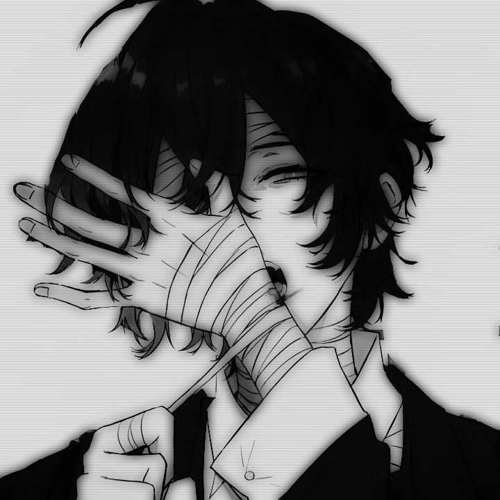

"Osamu Dazai (太宰 治, Dazai Osamu?) is a member of the Armed Detective Agency and former executive of the underworld organization, the Port Mafia. He has the Ability named No Longer Human."
Osamu Dazai
Bungo Stray Dogs
"Osamu Dazai (太宰 治, Dazai Osamu?) is a member of the Armed Detective Agency and former executive of the underworld organization, the Port Mafia. He has the Ability named No Longer Human."
Bungo Stray Dogs